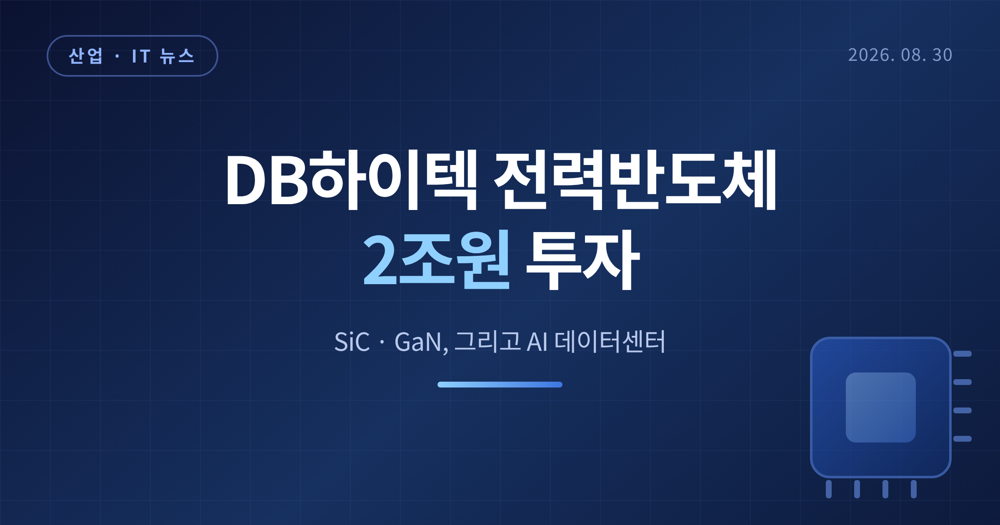
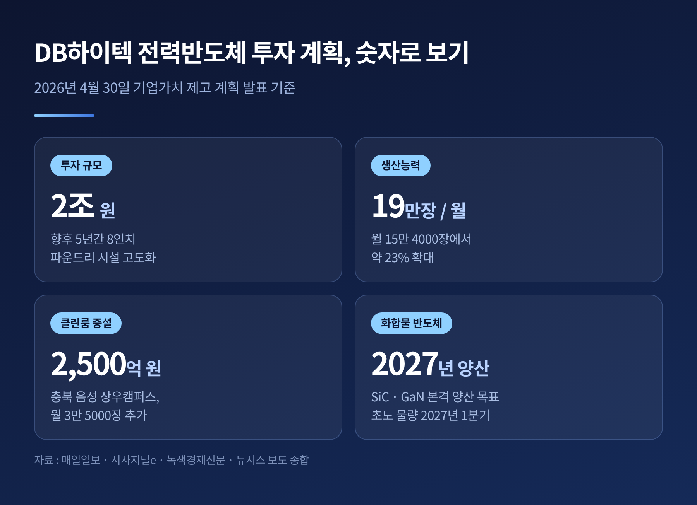
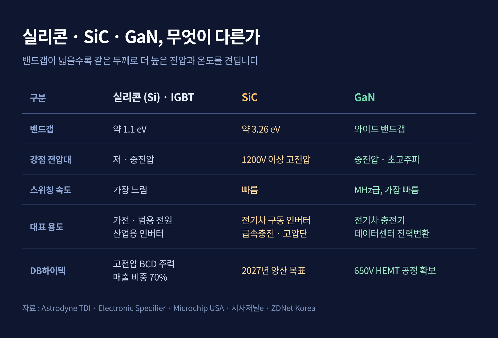
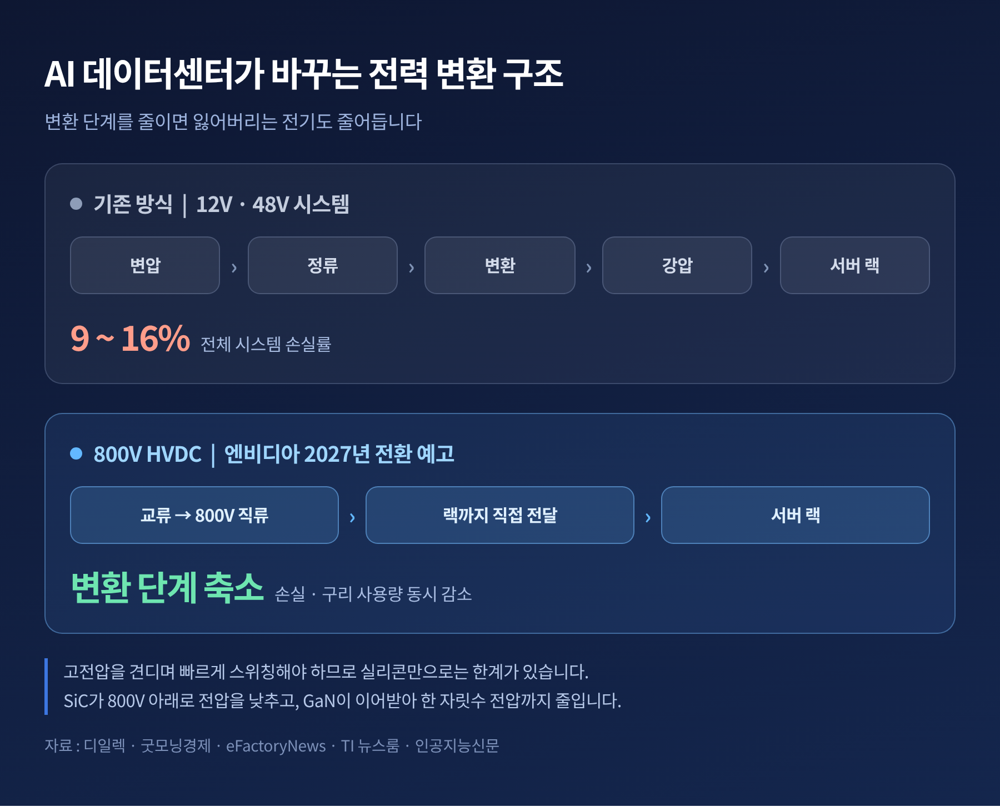
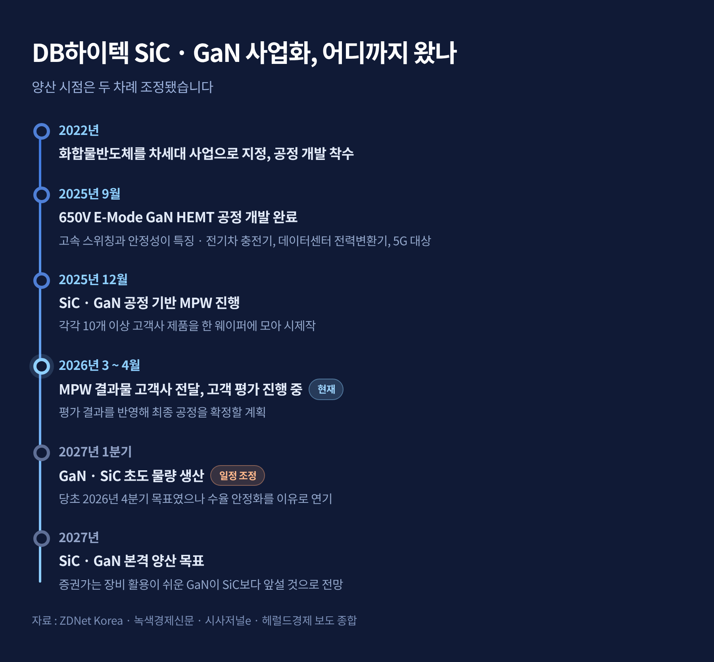
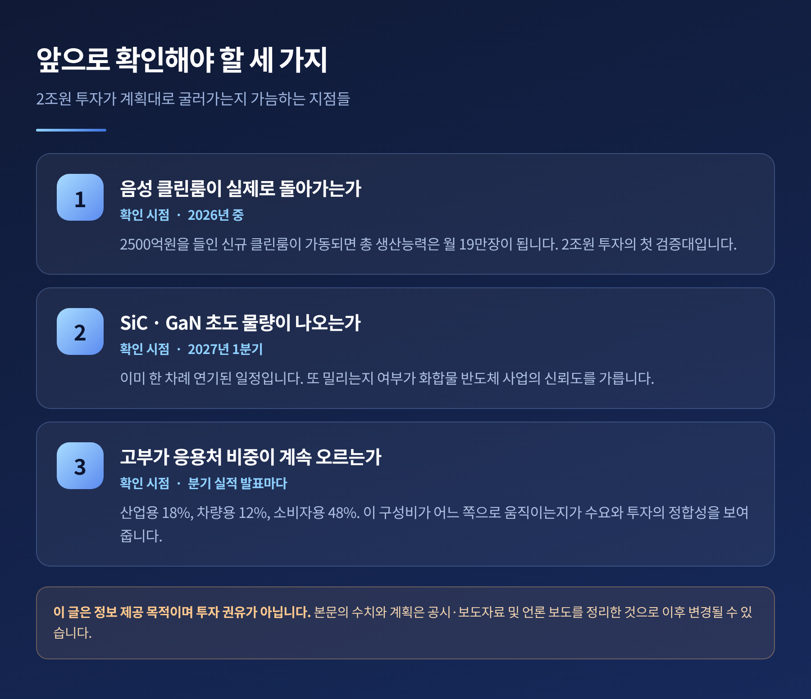

이번 글에서는 DB하이텍이 내놓은 5년 2조원 규모의 전력반도체 투자 계획을 정리해 보겠습니다. 숫자 자체보다, 그 숫자가 어디에서 나왔고 무엇을 향하고 있는지를 따라가 보려 합니다.
세 줄 요약
DB하이텍은 2026년 4월 30일 기업가치 제고 계획을 공시하면서 대규모 투자 계획을 함께 발표했습니다. 핵심은 향후 5년간 총 2조원을 8인치(200mm) 파운드리 시설 고도화에 투입하겠다는 것입니다.
돈이 향하는 곳은 두 갈래로 정리됩니다.
첫째, 부가가치가 높은 고전압 전력반도체의 양산 확대입니다.
둘째, 실리콘카바이드(SiC)와 질화갈륨(GaN) 등 차세대 전력반도체의 사업화입니다.
회사는 이와 함께 8인치 공정 고도화, 팹리스 사업 확대, 12인치 시장 진출, 신수종 사업 발굴을 4대 발전 방향으로 제시했습니다. 주주환원율 30%와 배당성향 20%를 유지하고, 보유 자사주의 1.4%에 해당하는 59만 2000주를 연내 소각하겠다는 내용도 같은 날 나왔습니다.
이 계획은 2026년 8월 5일 2분기 실적 발표에서 다시 확인됐습니다. 회사는 "현재 진행 중인 캐파 확장을 차질 없이 추진하겠다"고 밝혔습니다.
한 가지 짚어둘 점이 있습니다. DB하이텍은 2024년에도 비슷한 성격의 계획을 내놓은 적이 있습니다. 당시 보도된 규모는 2030년까지 2조 3000억원이었고, 이 중 SiC·GaN 개발과 양산에만 약 1조 1850억원이 배정된다는 내용이었습니다. 2026년 발표분과 기준 연도가 다르고 금액도 다릅니다. 같은 계획을 매년 갱신하는 과정에서 표현이 달라진 것으로 보이지만, 두 수치의 관계는 공개 자료만으로는 확정되지 않습니다.

투자의 성격을 이해하려면 공장 사정을 봐야 합니다.
DB하이텍의 2026년 1분기 파운드리 가동률은 98% 이상이었습니다. 1분기는 통상 비수기입니다. 그런데도 사실상 풀가동이었고, 이 상태는 2025년부터 이어져 왔습니다.
생산능력 확대는 이미 진행 중입니다. 회사는 2024년 10월 2500억원을 들여 충북 음성 상우캠퍼스 팹2의 유휴 공간에 신규 클린룸을 조성하겠다고 발표했습니다. 완공되면 8인치 웨이퍼 기준 월 3만 5000장이 더해집니다. 총 생산능력은 월 15만 4000장에서 월 19만장으로 약 23% 늘어납니다. 이 신규 클린룸에서 GaN과 SiC, 그리고 BCDMOS가 생산될 예정입니다.
정리하면 이렇습니다. 이번 2조원은 비어 있는 라인을 채우기 위한 투자가 아닙니다. 이미 꽉 찬 라인의 병목을 푸는 투자에 가깝습니다.
실적도 같은 방향을 가리킵니다. 2026년 2분기 매출은 4145억원, 영업이익은 1052억원을 기록했습니다. 전년 동기 대비 각각 23%, 43% 늘었고 영업이익률은 25%였습니다. 회사는 자동차·산업용 전력반도체 수요에 더해 AI 데이터센터와 로봇 등 신성장 응용 분야 물량이 확대되며 제품 믹스가 개선됐다고 설명했습니다.
매출 구성의 변화도 뚜렷합니다. 전력반도체 비중은 2026년 1분기 70%에 도달했습니다. 1년 전 64%, 직전 분기 68%에서 계속 올라온 수치입니다. 같은 기간 산업용 비중은 18%, 차량용은 12%로 각각 6%포인트, 2%포인트 늘었고, 소비자용은 8%포인트 줄어 48%가 됐습니다.
예전의 8인치 파운드리는 저물어가는 레거시 공정으로 불렸습니다. 지금은 전력을 다루는 칩이 몰려드는 통로가 되었습니다.
여기서 기술 이야기를 잠시 하겠습니다. 이 부분을 이해하지 못하면 투자의 의미가 잡히지 않습니다.
반도체 소재에는 밴드갭(band gap)이라는 값이 있습니다. 전자가 절연 상태에서 전기가 통하는 상태로 넘어가는 데 필요한 에너지 장벽입니다. 실리콘의 밴드갭은 약 1.1eV입니다. SiC는 약 3.26eV로 3배가량 넓습니다.
장벽이 높다는 것은 무엇을 뜻할까요. 같은 두께로 훨씬 높은 전압과 온도를 버틴다는 뜻입니다.
그 결과가 실제 성능으로 이어집니다. 같은 내압을 더 얇은 층으로 구현할 수 있으니 전류가 흐를 때의 저항이 줄고, 전도 손실이 줄어듭니다. 스위칭 손실도 함께 낮아집니다. 손실이 적으면 더 빠른 주파수로 켜고 끌 수 있고, 주파수가 올라가면 인덕터와 커패시터 같은 수동 부품을 작게 만들 수 있습니다. 전원장치 전체가 작아지고 효율이 오르는 연쇄가 일어납니다.
둘의 역할은 갈립니다.
SiC는 절연 파괴 전계가 높고 열전도도가 뛰어납니다. SiC 모스펫은 3.3kV 이상의 매우 높은 전압을 차단하면서도 실리콘보다 전도 손실이 훨씬 낮습니다. 고전압·고전력 영역이 SiC의 자리입니다.
GaN은 속도가 무기입니다. 스위칭 에너지가 SiC보다도 50% 이상 낮고, GaN HEMT는 기존 IGBT보다 자릿수 단위로 빠르게, 메가헤르츠(MHz) 영역에서 스위칭합니다. 중간 전압대의 고주파 영역이 GaN의 자리입니다.
업계에서는 이를 이렇게 나눠 씁니다. 1200V 이상에서는 SiC가 유리하고, 그보다 낮은 전압에서는 GaN이 유리합니다. 데이터센터에서는 SiC가 전압을 800V 아래로 낮추고, 그다음을 GaN이 받아 한 자릿수 전압까지 줄이는 식입니다.
DB하이텍이 확보한 것은 650V E-Mode GaN HEMT 공정입니다. 2025년 9월 개발 완료를 발표했고, 고속 스위칭과 안정성이 특징으로 전기차 충전기, 데이터센터 전력변환기, 5G 통신에 쓰입니다.
다만 오해는 피해야 합니다. SiC와 GaN이 실리콘을 곧바로 밀어내는 것은 아닙니다. DB하이텍 전력반도체 매출의 대부분은 여전히 실리콘 기반 BCD 공정에서 나옵니다. BCD는 아날로그 제어(Bipolar)와 디지털 로직(CMOS), 고전압 전력 소자(DMOS)를 하나의 칩에 통합하는 기술입니다. DB하이텍은 세계 최초로 0.18㎛ BCDMOS를 개발한 이력을 갖고 있습니다.

전력반도체 수요를 밀어올린 가장 큰 힘은 AI입니다.
기존 데이터센터는 들어온 전기를 변압, 정류, 변환, 강압까지 서너 단계에 걸쳐 바꿔 왔습니다. 단계마다 손실이 쌓입니다. 전체 시스템 손실률은 9~16%에 달했습니다.
엔비디아는 이 구조를 바꾸겠다고 선언했습니다. 2027년부터 기존 12V·48V 시스템을 800V HVDC(고전압 직류)로 대체한다는 것입니다. 교류를 800V 직류로 한 번에 바꿔 랙까지 그대로 보내면, 변환 단계가 줄어든 만큼 손실도 줄어듭니다. 굵은 구리 배선도 덜 씁니다.
문제는 이 구조를 실제로 구현하려면 고전압을 견디면서 빠르게 스위칭하는 소자가 필요하다는 점입니다. 실리콘으로는 한계가 분명합니다. 그래서 800V 설계를 둘러싼 경쟁은 곧 SiC·GaN 경쟁이 됐습니다.
유럽 최대 전력반도체 전시회인 PCIM 2026에서 'AI 및 데이터센터' 스테이지가 처음 신설된 것도 같은 흐름입니다. 이 전시회에는 27개국 650여 개 기업이 참가했고, DB하이텍도 2년 연속 부스를 열어 SiC·GaN 개발 현황과 BCDMOS 공정을 소개했습니다.

전력반도체 시장의 상위권은 오랫동안 유럽과 미국, 일본 기업이 차지해 왔습니다.
전체 전력반도체 시장 1위는 독일 인피니언으로 점유율은 17% 안팎입니다. SiC 전력반도체만 놓고 보면 2023년 기준 ST마이크로일렉트로닉스 32.6%, 온세미 23.6%, 인피니언 16.5%, 울프스피드 11.1% 순이었습니다. 다만 이후 시장이 크게 흔들렸으므로 현재 순위는 다를 수 있습니다.
여기서 중요한 구분이 하나 있습니다. 이들은 설계부터 생산·판매까지 직접 하는 IDM(종합반도체기업)이고, DB하이텍은 고객의 설계를 받아 만드는 순수 파운드리입니다. 같은 링 위에서 맞붙는 관계가 아닙니다. DB하이텍의 자리는 이들이 다 받지 못하는 팹리스와 중소 IDM의 물량을 소화하는 쪽에 가깝습니다.
유럽 공략이 의미를 갖는 이유도 여기에 있습니다. 유럽은 글로벌 전력반도체 시장의 약 23%를 차지하는 핵심 권역인데, 정작 유럽에는 자체 대형 파운드리가 없습니다. 현지 IDM과 팹리스가 외부 위탁 생산에 의존합니다. DB하이텍이 두 해 연속 독일 뉘른베르크를 찾은 배경입니다.
시장 전망도 우호적입니다. 시장조사기관 욜 디벨롭먼트는 SiC 전력반도체 시장이 2026년 약 48억 달러에서 2030년 약 104억 달러로 연평균 21% 성장할 것으로 봅니다. GaN은 같은 기간 약 9억 달러에서 약 29억 달러로 연평균 33% 성장할 전망입니다. 다른 조사기관인 모르도르 인텔리전스는 SiC 시장의 2026년 규모를 34억 1000만 달러로 더 낮게 잡습니다. 기관마다 집계 범위가 달라 숫자는 갈리지만, 두 자릿수 고성장이라는 방향은 같습니다.
여기서 조금 불편한 이야기를 해야겠습니다.
메모리에서 한국 반도체가 보여준 성적과 달리, 전력반도체에서 한국의 존재감은 크지 않습니다. SiC 전력반도체는 기술 난도가 높아 스위스, 미국, 독일 등 소수 국가가 시장의 약 90%를 점유하고 있습니다. 한국의 수입 의존도는 90%를 넘습니다.
정부는 현재 10% 수준인 국내 SiC 전력반도체 기술 자립률을 2030년까지 20%로 끌어올리는 목표를 세웠습니다. 핵심 기술 개발에 2028년까지 국비 902억원, 전문 인력 양성에 2029년까지 250억원이 투입됩니다. 목표 자체가 '20%'라는 점이 현재 위치를 말해줍니다.
국내에는 SK파워텍, KEC, 파워마스터 등이 SiC 전력소자 설계와 생산 역량을 갖고 있고, 트리노테크놀로지와 아이큐랩은 팹리스에서 파운드리로 영역을 넓히는 중입니다. 소재 쪽에서는 SK실트론이 SiC 웨이퍼를 인피니언에 장기 공급하는 계약을 맺기도 했습니다. 장비 업계도 SiC·GaN용 설비 국산화에 나섰습니다. 생태계가 없는 것은 아니지만, 아직 조각조각입니다.
이 맥락에서 보면 DB하이텍의 2조원은 국내 전력반도체 분야에서 드문 규모의 단일 투자입니다. 다만 눈을 밖으로 돌리면 이야기가 달라집니다. 인피니언이 독일 드레스덴 스마트 파워 팹 한 곳에 투입한 금액이 50억 유로, 약 7조원입니다. EU는 여기에 10억 유로를 지원합니다. 국내 기준의 큰 투자가 글로벌 기준에서도 큰 투자인 것은 아닙니다.
투자 계획은 발표됐지만, 그대로 굴러갈지는 다른 문제입니다. 세 가지를 짚어두겠습니다.
첫째, 양산 일정이 이미 여러 번 밀렸습니다.
DB하이텍은 2022년부터 화합물반도체 공정을 개발해 왔습니다. 2025년 9월 650V GaN 공정 개발을 마쳤고, 그해 12월 SiC·GaN MPW로 각각 10개 이상 고객사의 제품을 만들어 2026년 3~4월에 전달했습니다. 현재 고객 평가가 진행 중입니다. 그런데 GaN과 SiC의 초도 물량 생산 시점은 2026년 4분기에서 2027년 1분기로 조정됐고, 실리콘 캐패시터 양산도 뒤로 밀렸습니다. 이유는 수율 안정화입니다. 본격 양산 목표는 2027년입니다.
둘째, 전기차 수요 둔화라는 변수가 있습니다.
전기차 판매가 예상만큼 늘지 않으면서 완성차 업체들이 고전압 시스템 전환에 신중해졌고, 차세대 부품 조달을 미루는 흐름이 나타났습니다. 그 여파를 가장 크게 맞은 곳이 미국 울프스피드입니다. 200mm SiC 캐파 확충에 막대한 자본을 쏟아부었으나 재무가 급격히 나빠졌고, 2025년 6월 말 챕터11 파산보호를 신청해 약 46억 달러의 부채를 줄인 뒤 그해 9월 절차를 졸업했습니다. 이후 전기차 대신 AI 데이터센터와 고전압 응용으로 전략을 틀었습니다. 선제적 대규모 투자가 언제나 보상받지는 않는다는 사례입니다.
셋째, 8인치 호황 자체가 영원하지 않습니다.
지금의 실적 개선에는 가격 상승 효과가 상당히 섞여 있습니다. 삼성전자와 TSMC가 8인치 공급을 줄이면서 생긴 공백이 큽니다. 트렌드포스는 2026년 글로벌 8인치 캐파가 전년 대비 2.4% 줄고 평균판매단가는 5~20% 오를 것으로 봤습니다. 이 구조는 중국 파운드리의 증설이나 선두 업체의 정책 변화에 따라 달라질 수 있습니다.

세 개의 확인 지점을 제안하겠습니다.
첫 번째는 음성 클린룸입니다. 계획대로라면 2025년 말 완공, 2026년부터 장비 투입과 양산입니다. 월 19만장 체제가 실제로 가동되는지가 2조원 투자의 첫 검증대입니다.
두 번째는 2027년 1분기입니다. SiC·GaN 초도 물량이 이때 나오는지, 아니면 또 한 번 조정되는지가 화합물 사업의 신뢰도를 가릅니다. 회사는 GaN용 PDK(공정 설계 키트) 출시도 예고한 상태입니다. 증권가는 GaN이 SiC보다 빠를 것으로 봅니다. GaN은 기존 장비를 활용하기 쉬운 반면, SiC는 에피택시 같은 추가 투자가 필요하기 때문입니다.
세 번째는 응용처 구성비입니다. 산업용과 차량용, 그리고 AI 데이터센터 물량의 비중이 계속 오르는지를 보면 됩니다. 소비자용 비중이 줄고 고부가 응용처가 늘어나는 흐름이 유지된다면, 투자와 수요가 어긋나지 않고 있다는 신호로 읽을 수 있습니다.

정리하면 이렇습니다.
DB하이텍의 2조원은 새로운 시장을 만들겠다는 선언이 아닙니다. 이미 자기 라인 앞에 줄을 선 수요를 받아내기 위한 증설이고, 그 위에 화합물 반도체라는 다음 계단을 하나 얹은 계획입니다. 실리콘 위에서 쌓아온 고전압 BCD 기술을 발판 삼아, 더 넓은 밴드갭의 소재로 옮겨 가려는 시도입니다.
성공을 장담하기에는 이릅니다. 양산 일정은 미뤄졌고, 앞선 경쟁사 하나는 같은 길을 가다 파산보호까지 갔습니다. 국내 전력반도체 생태계의 기반도 아직 얇습니다.
그럼에도 방향은 분명해 보입니다. "전기를 더 적게 잃는 기술이, AI 시대의 병목을 푸는 기술이 된다."
AI가 필요로 하는 것은 결국 연산이 아니라 전기라는 말이 있습니다. 그 전기가 지나는 길목에 어떤 칩이 놓이는지를 두고, 조용한 경쟁이 이미 시작된 셈입니다.
면책 안내 — 이 글은 산업 동향에 대한 정보 제공을 목적으로 작성됐으며, 특정 종목에 대한 투자 권유나 매매 추천이 아닙니다. 본문의 수치와 계획은 각 기업의 공시·보도자료 및 언론 보도를 정리한 것으로 이후 변경될 수 있습니다. 투자 판단과 그에 따른 책임은 투자자 본인에게 있습니다.